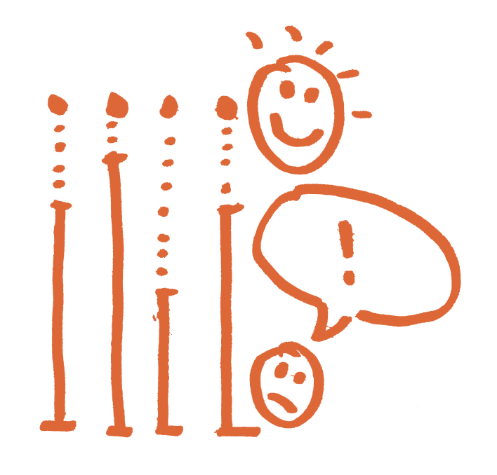

<section class="tabContainer mw8 center euclid-m">
<!-- Tab links -->
  <!-- <div class="tabbar ">
    <button class="tablinks white active euclid-m" onclick="showBar(event,'paarweise')" style="background-color: {{page.color}}">paarweise</button>
    <button class="tablinks white euclid-m" onclick="showBar(event,'gruppenweise')" style="background-color: {{page.color}}">gruppenweise</button>
  </div> -->

<div class="subTab " id="paarweise" style="background-color: {{page.color}}">
  <button class="tablinks active euclid-m pa3 white" onclick="openTab(event,'stimmungsbarometer')" style="background-color: {{page.color}}">Stimmungsbarometer</button>
  <button class="tablinks euclid-m pa3 white" onclick="openTab(event,'bewegte-antwort')" style="background-color: {{page.color}}">Bewegte Antwort</button>
  <button class="tablinks euclid-m pa3 white" onclick="openTab(event,'daumenblitzlicht')" style="background-color: {{page.color}}">Daumenblitzlicht</button>
  <!-- <button class="tablinks euclid-m pa3 white " onclick="openTab(event,'warmup')" style="background-color: {{page.color}}">WarmUp</button> -->
</div>
<!-- <div class="subTab" id="gruppenweise" style="display: none;background-color: {{page.color}} ">
  <button class="tablinks white euclid-m" onclick="openTab(event,'eins')" style="background-color: {{page.color}}">eins</button>
  <button class="tablinks white euclid-m" onclick="openTab(event,'zwei')" style="background-color: {{page.color}}">zwei</button>
</div> -->

<!-- Tab content -->

<!-- paarweise -->
<div id="stimmungsbarometer" class="tabcontent pa4">
  <div class=" w5 mr4 dib v-top h-100">
    
  </div>
  <div class=" w-60 dib ph5">
    <h3 class="euclid-m f-xxl mt0 mb4">Stimmungsbarometer</h3>
    <ul class="list pl0">
      <li class="mv3 lh-copy euclid-r">Alle Schüler*innen stehen in einer Reihe nebeneinander.  </li>
      <li class="mv3 lh-copy euclid-r">Vor jeder Schüler*in verläuft eine imaginierte gerade Linie. </li>
      <li class="mv3 lh-copy euclid-r">Die Tanzvermittler*in trifft eine Aussage. z.Bsp:

        <li class="lh-copy euclid-m pl4 mv2">„Ich habe heute viele neue Bewegungen gelernt.“</li>
        <li class="lh-copy euclid-m pl4 mv2">„Ich bin mit meinen Mittänzer*innen heute respektvoll umgegangen.“</li>
        <li class="lh-copy euclid-m pl4 mv2">„Ich habe mich heute gut entspannen können.“</li>

      </li>
      <li class="mv3 lh-copy euclid-r">Am Platz stehen zu bleiben bedeutet die Aussage „stimmt überhaupt nicht“ , an das Ende der Linie zu gehen bedeutet „stimmt total“.  </li>
      <li class="mv3 lh-copy euclid-r">Der Raum dazwischen bildet den Grad der Bejahung oder Verneinung der getroffenen Aussage ab.</li>
    </ul>

  </div>
</div>

<div id="bewegte-antwort" class="tabcontent" style="display: none; ">
  <h3>Plädoyer</h3>
  <p>Paris is the capital of France.</p>
</div>

<div id="daumenblitzlicht" class="tabcontent" style="display: none; ">
  <h3>Talkshow</h3>
  <p>Tokyo is the capital of Japan.</p>
</div>


</section>
